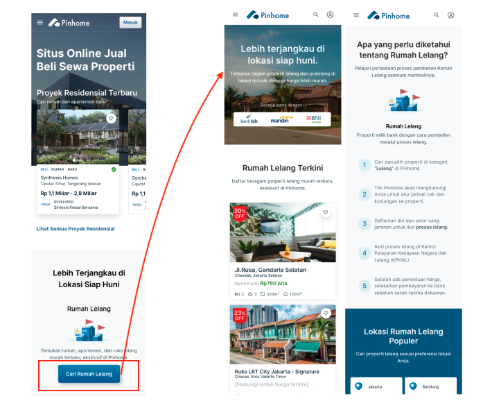
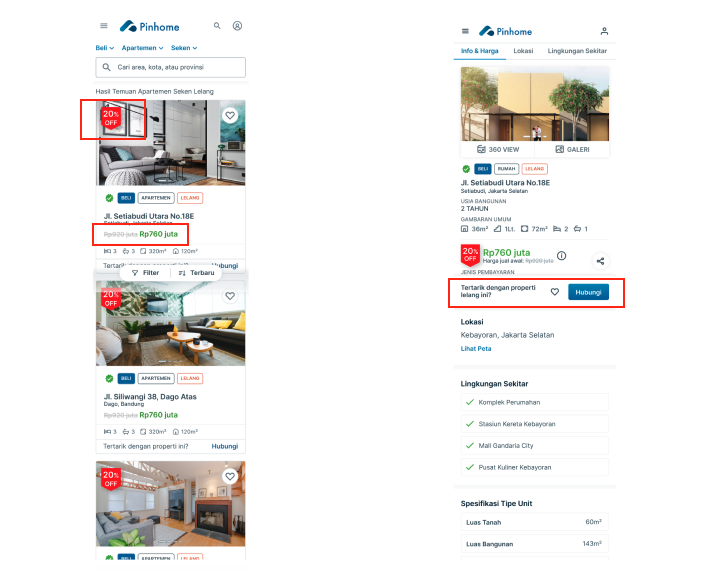
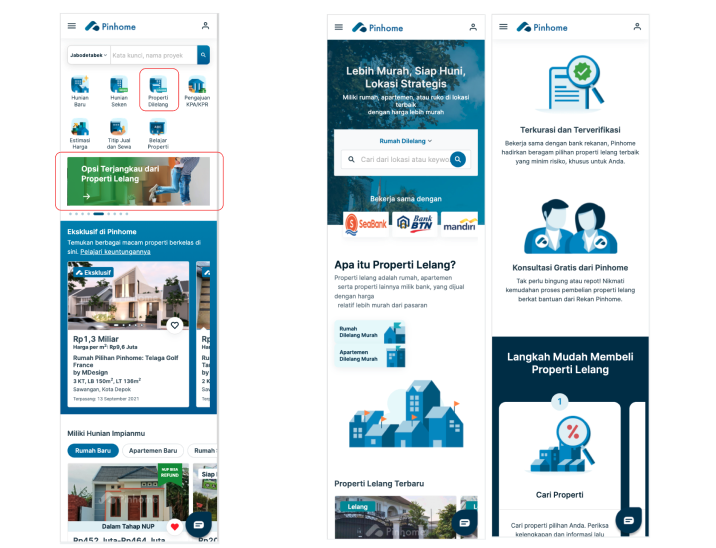
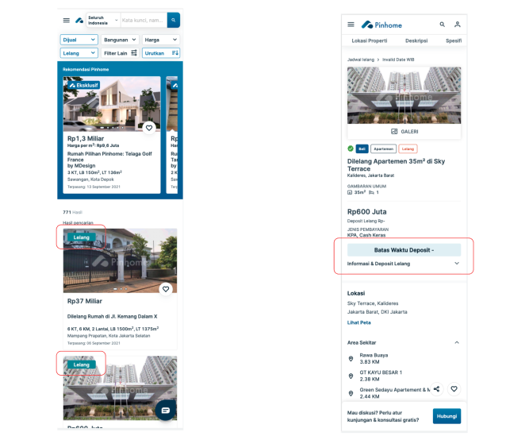

This project aimed to help Indonesians discover more accessible housing opportunities beyond conventional primary and secondary property markets by introducing foreclosure housing options into Pinhome’s ecosystem. Through partnerships with local banks, Pinhome explored ways to transform scattered and difficult-to-access foreclosure property listings into a more transparent, trustworthy, and user-friendly experience. These bank-owned properties offered more affordable alternatives for home seekers, yet remained largely undiscovered and difficult to access by the public.
One of the biggest challenges was the lack of awareness and trust surrounding foreclosure housing in Indonesia. Updated listings were often distributed through static PDFs or informal sharing channels, while many potential buyers felt uncertain about the purchasing process due to negative perceptions around property auctions and legal procedures. As Senior Product Designer, I conducted in-depth user research to understand customer pain points, affordability considerations, trust barriers, and expectations toward platform. These helped shape a more approachable experience for exploring foreclosure properties.
About Pinhome
Pinhome is one of Indonesia’s technology-driven property platforms focused on simplifying home buying, selling, renting, financing, and home services within a single ecosystem. Founded in 2020, Pinhome combines property discovery, mortgage assistance, agent services, and home maintenance solutions to create a more accessible and transparent end-to-end property experience for Indonesian consumers.
Beyond functioning as a property marketplace, Pinhome also positions itself as a digital platform that helps reduce common barriers in property transactions through technology, operational support, and integrated service experiences. Through collaborations with banks, property agents, developers, and financial institutions, Pinhome continues to expand its ecosystem to support a broader range of housing and property-related needs across Indonesia.
"Foreclosure housing holds strong affordability potential, but trust barriers and complex purchasing experiences still prevent many Indonesians from confidently exploring the opportunity."
Process
Limited Information, Unfamiliar, and Lack of Trust
When Pinhome partnered with Bank Mandiri to help market foreclosure properties in late 2020, I collaborated closely with the Business Development and Product teams to better understand the challenges surrounding foreclosure housing in Indonesia. Although Bank Mandiri owned a large inventory of foreclosure properties, the listings were still managed through outdated digital channels that were difficult to navigate, inconsistently updated, and lacked clear guidance for potential buyers.
At the time, updated property catalogs were mostly distributed manually through large PDF files shared via WhatsApp by administrators. The experience felt fragmented and difficult to trust due to inconsistent property details, unclear information structures, slow manual responses, and the absence of guided purchasing assistance. Despite the attractive pricing potential, the overall experience made foreclosure housing feel inaccessible and intimidating for most users.
Because the project took place during the COVID-19 period, directly recruiting foreclosure property buyers for interviews was extremely challenging. To bridge this gap, I synthesized insights from secondary property buyers and property investors to better understand their expectations and decision-making behaviors. Across interviews, three key considerations consistently emerged:
Property location
Pricing and affordability
Legal clarity and ownership legitimacy
Most participants had never seriously considered foreclosure housing before due to the lack of trusted listing sources and the perception that the process would be complicated, risky, and filled with hidden costs. While investors were highly interested in the lower pricing opportunities, many still viewed foreclosure properties as “too good to be true” because of the lack of trustworthy curation and transparent buying guidance.
Most updated foreclosure listings were shared manually through PDF files, resulting in a fragmented user experience.Based on user research, potential buyers need more trusted guidance when considering foreclosure properties.
Foundational Guides to Making Foreclosure More Accessible
Based on the research findings, existing bank workflows, and the trust barriers experienced by potential buyers, several opportunities emerged for Pinhome to help make foreclosure housing more approachable and accessible for Indonesian home seekers.
These are the steps worth exploring based on the insights:
Providing clearer and more visible foreclosure property information, including attractive pricing visibility and simpler explanations of the purchasing process to help users better understand foreclosure housing as a viable alternative within the secondary property market.
Strengthening trustworthiness throughout the discovery experience by improving listing transparency, information clarity, and the credibility of agent representatives assisting the transactions. Trust became a critical factor in encouraging users to move from passive browsing into active property consideration.
Offering more guided and personalized assistance through official Pinhome property agents to help reduce anxiety around the more complex foreclosure purchasing process. Human support and trustworthy guidance played an important role in helping users feel more confident navigating legal, administrative, and procedural uncertainties often associated with foreclosure properties.
Building Attractive, Trustworthy, and Informative Foreclosure Listings
As Senior Product Designer, I translated the earlier research hypotheses into design explorations focused on making foreclosure housing more accessible, trustworthy, and appealing for users searching for secondary homes through Pinhome’s platform. The main challenge was not only introducing foreclosure listings into the ecosystem, but also helping users feel confident enough to explore an unfamiliar and often intimidating housing category.
In order to address those, I focused on:
Identifying the right entry point within Pinhome’s homepage experience.
Initially, I proposed directly showcasing attractive foreclosure listings and pricing to immediately capture user attention. However, due to legal and operational considerations around directly integrating foreclosure inventory into the broader marketplace ecosystem, the safer approach was to introduce users into a dedicated foreclosure experience first.
From there, I explored messaging and copywriting directions that emphasized move-in-ready properties, attractive pricing opportunities, and easier access to affordable housing alternatives.
Designing a dedicated foreclosure landing experience centered around trust-building and guided discovery.
The experience highlighted credible bank partners, showcased more standardized and visually approachable property listings, and introduced clearer educational flows to help users understand the foreclosure purchasing process more easily.
To reduce friction and uncertainty, the property detail pages were also designed with more structured information architecture and direct one-click access to official Pinhome agents for further assistance and consultation.

Providing entry point to a dedicated foreclosure landing page.

Highlighting affordability and accessibility to reach dedicated agents.
Validating Concepts and Readjustments to Feedback
Once the initial design concepts were ready, I collaborated closely with my Design Leader, Product Manager, and Business Development team to gather feedback while simultaneously conducting comprehension tests and prototype validations with secondary property seekers. Since the project took place during the COVID-19 period, all testing sessions were conducted remotely. Through these iterations, several important adjustments emerged to better align the experience with actual user behaviors and business realities:
Aligning with Pinhome’s evolving product and design ecosystem
At the same time this project was being developed, Pinhome was also undergoing a major homepage revamp. As a result, the foreclosure entry points needed to be adjusted to align with the latest homepage design principles and component systems. This opened opportunities to explore more cohesive promotional banners, product icons, and discovery modules that felt visually integrated while still attracting attention toward foreclosure offerings.
Deeper understanding of location-first behavior before affordability consideration
One of the biggest behavioral insights was that users rarely searched for “foreclosure properties” directly. Instead, they prioritized searching for their preferred locations first before filtering options based on affordability. Foreclosure listings became compelling only after users found properties within desirable areas and suitable price ranges. This insight led to the need for clearer and more prominent property categorization systems to help users easily distinguish between primary, regular secondary, and foreclosure properties while browsing listings.
Providing crucial foreclosure information for purchase readiness
Testing with experienced property investors also revealed the importance of displaying critical foreclosure-related timelines and procedural information more transparently. Unlike regular property transactions, foreclosure purchases involved fixed deposit deadlines and additional procedural commitments that significantly influenced buyer confidence and decision-making. As a result, important information such as deposit timelines, payment requirements, and next-step guidance became essential additions within the property detail experience to better support informed purchasing considerations.

Design readjustments for a more cohesive new experience without sacrificing usability for foreclosure listings.

Providing distinguished visual cues to help users quickly identify foreclosure properties and important information.
"Providing deposit timeline information on the page is crucial for foreclosure purchasing process" - S, 58 (M), Real Estate Investor
Learnings and Achievements
This project reinforced the importance of deeply understanding real user behaviors, aspirations, and purchasing journeys beyond initial assumptions. It became a strong reminder to continuously validate ideas, stay open to feedback, and iteratively refine solutions until they genuinely align with users’ real needs and decision-making behaviors.
Shortly after the project launched in December 2020, Pinhome onboarded two additional banking partners, BTN and SeaBank, alongside Bank Mandiri, reflecting growing confidence in the platform’s foreclosure housing initiative.
The project also contributed to several positive early growth indicators:
+50% increase in curated foreclosure property listings
+120% increase in monthly unique visits to foreclosure landing pages
While awareness and discovery metrics showed strong momentum, measuring successful transaction conversions remained challenging because final foreclosure purchases were often completed through external auction platforms or offline bank processes. Despite these ecosystem limitations, the project became a valuable learning experience in building trust-driven experiences within fragmented and complex service journeys.